Dinámica de Robots#
\( \newcommand{\tauvec}{ \boldsymbol{\tau} } \renewcommand{\vec}[1]{\boldsymbol{\mathbf{#1}}} \newcommand{\rbr}[1]{ \left( #1 \right) } \)
La obtención del modelo dinámico de un manipulador juega un rol importante para la simulación del movimiento, el análisis de la estructura del manipulador y el diseño de los algoritmos de control. La simulación del movimiento de un manipulador permite probar estrategias de control sin necesidad de disponer físicamente del manipulador. El cálculo de las fuerzas y torques requeridos para la ejecución de los movimientos del robot proporciona información valiosa para el diseño de las juntas, transmisiones y actuadores.
El modelo dinámico de un robot consiste en una ecuación diferencial (ordinaria) vectorial en las posiciones, ya sean articulares \( \vec{q} \) o cartesianas \( \vec{x} \), generalmente de segundo orden, pudiéndose expresar como:
En las expresiones anteriores el vector \( \tauvec \) corresponde a las fuerzas y torques aplicados en las juntas por los actuadores. La ecuación (53) corresponde al modelo dinámico articular y la ecuación (54) al modelo dinámico cartesiano.
Dinámica de cuerpo rígidos#
Ecuaciones de Newton-Euler.#
La fuerza resultante que actúa en un cuerpo rígido es igual a la tasa de cambio en el tiempo de su cantidad de movimiento lineal con respecto a un sistema de referencia inercial:
Donde \(\vec{v}_G\) es la velocidad del centro de masa del cuerpo rígido, \(\Sigma \vec{F}\) es la fuerza resultante que actúa sobre el cuerpo rígido y \(\vec{P}\) es la cantidad de movimiento lineal con respecto al sistema de referencia inercial. Dado que \( \vec{a}_G = \dot{\vec{v}}_G \), la ecuación anterior se puede escribir como
De la ecuación (55) se desprende un principio o teorema de conservación de la cantidad de movimiento:
Si la fuerza resultante en un sólido es cero, entonces \( \dot{\vec{P}} = 0 \), lo cual implica que la cantidad de movimiento lineal del sólido se conserva, es decir, permanece constante.
El momento resultante (\(\Sigma \vec{M}_O\)) de las fuerzas externas que actúan en un cuerpo rígido con respecto a un punto fijo \(O\) en un sistema de referencia inercial, es igual a la tasa de cambio en el tiempo de la cantidad de movimiento angular alrededor de \(O\):
donde \(\vec{H}_O\) es la cantidad de movimiento angular del cuerpo con respecto al mismo punto \(O\). De la ecuación (56) se desprende también un principio de conservación de la cantidad de movimiento angular:
Si el momento resultante en un sólido con respecto a un punto fijo \(O\) es cero, entonces \(\dot{\vec{H}}_O = 0 \), lo cual implica que la cantidad de movimiento angular \(\vec{H}_O\) con respecto a \(O\) se conserva, es decir, permanece constante.
La ecuación (56) se puede escribir también haciendo que el punto \(O\) ahora se corresponda con la ubicación del centro de masa (\(G\)), es decir:
Donde \(\Sigma \vec{M}_G \) es la sumatoria de los momentos alrededor de \(G\) y \(\vec{H}_G\) la cantidad de movimiento angular alrededor del centro de masa.
Consideremos un cuerpo rígido modelado como un sistema de \(N\) partículas como el que se muestra en la figura. Las ecuaciones (55) y (56) son aplicables para este modelo. Si las \(N\) partículas son newtonianas, la cantidad de movimiento lineal y la cantidad de movimiento angular están dadas por:
donde \(m_i\) es la masa, \(\vec{v}_i\) la velocidad y \(\vec{R}_i\) la posición, de la i-ésima partícula, descritas en el sistema inercial.
Ecuaciones de Euler-Lagrange#
\( \newcommand{\La}{\mathcal{L}} \newcommand{\Ki}{\mathcal{K}} \newcommand{\Po}{\mathcal{P}} \newcommand{\LaEq}[1]{ \frac{d}{dt}\left( \frac{\partial\mathcal{L}}{\partial \dot{q}_{#1}} \right) - \frac{\partial\mathcal{L}}{\partial q_{#1}} = \tau_{#1}} \) Otra manera de abordar la dinámica de un cuerpo rígido (o partícula) es utilizar las ecuaciones de Euler-Lagrange. Dado un sistema mecánico de \(n\) grados de libertad, sus ecuaciones de movimiento se pueden obtener como sigue:
Donde \(\La\) es una función escalar llamada lagrangiano, y está dada por la diferencia entre la energía cinética y potencial del cuerpo rígido, es decir:
A \(q_i\) y \(\dot{q}_i\) se les denomina coordenada generalizada y velocidad generalizada, de forma respectiva. Un conjunto de coordenadas generalizadas \( \rbr{q_1, q_2, \cdots, q_n} \) es aquel que describe de manera completa la posición de un sistema de \(n\) grados de libertad. Las velocidades generalizadas son las derivadas de las coordenadas generalizadas \( \rbr{ \dot{q}_1, \dot{q}_2, \cdots, \dot{q}_n } \).
La experiencia demuestra que dadas simultáneamente las coordenadas y velocidades generalizadas se determina completamente el estado del sistema y permite, en principio, predecir su movimiento futuro. Las relaciones entre las aceleraciones, las velocidades y las coordenadas se llaman ecuaciones de movimiento. \cite{landau}
El término \(\tau_i\) corresponde a las fuerzas generalizadas aplicadas sobre el cuerpo rígido o sistema de cuerpos rígidos.
Energía cinética de un cuerpo rígido#
\(\newcommand{\W}{\boldsymbol{\omega}} \newcommand{\colvec}[3]{\begin{bmatrix}#1\\#2\\#3\end{bmatrix}} \newcommand{\w}[1]{\omega_{#1}} \newcommand{\sumin}{ \sum_{i=1}^n }\) En la Figura Fig. 78 se muestra un cuerpo rígido, el cual está rotando con una velocidad angular \(\W\) y donde la posición de la i-ésima partícula de masa \(m_i\) con respecto al sistema de referencia \(Gx'y'z'\) está dada por el vector \(\vec{r}_{i/G}\). El sistema de referencia \(Gx'y'z'\) está adherido al sólido y el sistema \(Oxyz\) es un sistema de referencia inercial.
{kind=link}
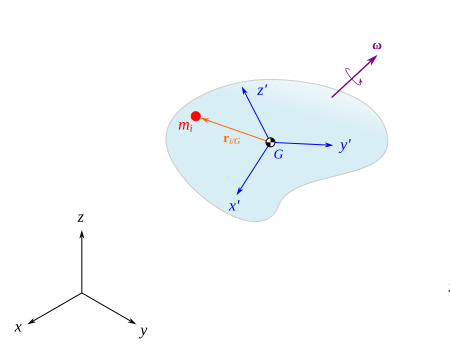
Fig. 78 Un cuerpo rígido en rotación.#
La energía cinética de un cuerpo rígido es la suma de las energías cinéticas de cada una de las partículas que lo conforman:
Para el sólido de la Figura Fig. 78 la velocidad \(\vec{v}_i\) de la partícula \(i\) se puede expresar en el sistema inercial como:
Sustituyendo la velocidad en la ecuación (62) se tiene:
Dado que la sumatoria de las masas de cada una de las partículas corresponde a la masa total del sólido, entonces el primer término de esta ecuación se puede expresar como:
Para el segundo término:
Por la definición de centro de masa, es sencillo verificar que el término:
Lo cual implica que el segundo término de (63) se hace cero.
Para el tercer término, podemos aplicar la siguiente identidad vectorial:
Así pues:
Este producto vectorial lo podemos desarrollar, para esto vamos a considerar que las componetes de los vectores \(\W\) y \(\vec{r}_{i/G}\) son:
Entonces:
\(\newcommand{\sbr}[1]{ \left[ #1 \right] }\) Factorizando las velocidades angulares, cada una de las componentes del producto vectorial resulta en:
De tal manera que, en forma más compacta:
donde:
Las cantidades dadas en la ecuación (65) se denominan momentos de inercia y las de la ecuación (66) corresponden a los productos de inercia.
El vector de la ecuación (64) se puede escribir en forma de una multiplicación matricial como:
donde \(I_G\) es una matriz dada por:
a esta matriz se le denomina matriz de inercia o más comunmente tensor de inercia. En este caso el tensor de inercia describe la manera en que la masa está distribuida con respecto al sistema de referencia \(Gx'y'z'\) adherido al sólido, así pues aún cuando el cuerpo se traslade o rote, el tensor de inercia permanece invariable. En secciones posteriores nos centraremos en cómo determinar cada uno de los componentes del tensor de inercia.
Considerando todo lo anterior, el tercer término de (63) se puede escribir como:
Dado que el producto punto de dos vectores se puede expresar como una multiplicación matricial:
Entonces, la energía cinética total del cuerpo rígido se puede escribir de la siguiente manera:
Energía potencial de un cuerpo rígido#
La energía potencial gravitatoria de un cuerpo rígido es una cantidad que depende de la masa, la gravedad y la posición del centro de masa. Se puede expresar como:
Donde \(m\) es la masa total del cuerpo rígido, \(\vec{g}\) es un vector que define la aceleración de la gravedad en el sistema inercial y \(\vec{r}_G\) es un vector que describe la posición del centro de masa del cuerpo rígido en el sistema inercial.
Centro de masa#
El centro de masa es un punto hipotético de un sistema de partículas o de un sólido, tal que dicho sistema se comporta como si toda su masa estuviera concentrada en ese único punto. Es importante destacar que el centro de masa no siempre coincide con un punto material físico en el objeto. El centro de masa es el único punto en el centro de una distribución de masa en el espacio que tiene la propiedad de que los vectores de posición ponderados relativos a este punto suman cero.
Para un sistema de \(n\) partículas, cada una de masa \(m_i\) y con una posición dada por \(\vec{r}_i\), las coordenadas \(\vec{R}\) del centro de masa deben satisfacer la condición:
Resolviendo para \(\vec{R}\) se tiene que:
O bien, expresado en términos de las componentes escalares:
Donde \(x_i, y_i, z_i\) son las coordenadas de la ubicación de la partícula \(i\) cuya masa es \(m_i\).
Ejemplo. Calcule el centro de masa del sistema de partículas que se muestran en la Figura. Cada partícula tiene una masa de 0.25 kg. Las unidades de longitud de la rejilla son metros.
{kind=link}
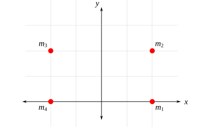
Fig. 79 .#
Solución:
De acuerdo con lo que sabemos todas las masas son iguales a 0.25 kg, es decir:
Las ubicaciones de las partículas son:
Las ecuaciones (70) se pueden generalizar para un cuerpo rígido, bajo la asunción de que un cuerpo rígido se puede considerar como un conjunto infinito de partículas cuyas distancias son invariables entre sí, así la sumatoria la podemos reemplazar por una integral, es decir:
En las ecuaciones anteriores los términos \(\tilde{x}, \tilde{y}, \tilde{z}\) denotan la ubicación del centro de masa del elemento diferencial utilizado para la integración. El diferencial de masa \(dm\) se puede expresar como:
En el caso general, la densidad podría no ser constante y depender de la ubicación, es decir \(\rho = \rho(x,y,z)\). Para la mayoría de situaciones en ingeniería, los componentes mecánicos están fabricados con materiales homogéneos (densidad constante), lo cual implica que el centro de masa coincidará con el centroide del volumen del sólido, de tal manera que las coordenadas del centro de masa se pueden determinar mediante:
Para cuerpos rígidos con forma de placas delgadas, de espesor uniforme y homogéneas, el centro de masa coincidirá con el centroide del área de la placa, así, las coordenadas del centro de masa se pueden determinar mediante:
\(\newcommand{\sint}[4]{\int_{#1}^{#2} #3 \, #4} \newcommand{\sintp}[4]{\int_{#1}^{#2} \left( #3 \right) \, #4} \newcommand{\dint}[7]{\int_{#1}^{#2} \int_{#3}^{#4} #5 \, #6 \, #7 } \newcommand{\dintp}[7]{\int_{#1}^{#2} \int_{#3}^{#4} \left(#5\right) \, #6 \, #7 } \newcommand{\frbr}[2]{ \left( \frac{#1}{#2} \right) } \newcommand{\fsbr}[2]{ \left[ \frac{#1}{#2} \right] } \newcommand{\fcbr}[2]{ \left\{ \frac{#1}{#2} \right\} } \newcommand{\fabr}[2]{ \langle \frac{#1}{#2} \rangle } \newcommand{\ffrac}[4]{ \frac{ \frac{#1}{#2} }{ \frac{#3}{#4} } } \)
Ejemplo. Calcule el centro de masa de la placa triangular que se muestra en la figura.
{kind=link}
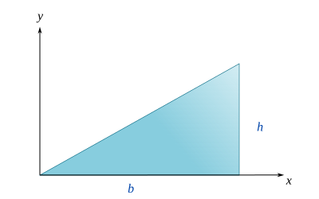
Fig. 80 .#
Solución:
Al tratarse de una placa delgada y homogénea, las coordenadas del centro de masa se pueden determinar como:
Estas integrales de área se pueden plantear de varias maneras, todo depende de la elección del elemento diferencial. En la siguiente figura se muestran dos posibles opciones. Del lado izquierdo se utiliza un elemento diferencial cuya área es \(dA = dx\,dy\), y cuyas coordenadas centroidales son \(\tilde{x} = x\) y \( \tilde{y} = y \). Del lado derecho se utiliza un elemento diferencial cuya área es \(dA = \frac{h}{b}x \, dx \), sus coordenadas centroidales son \( \tilde{x} = x \) y \( \tilde{y} = \frac{h}{2b}x \), observe que este es un elemento diferencial rectangular cuya base es \(dx\), y siendo su altura aquella definida por la hipotenusa del triángulo, cuya función es \(y(x) = \frac{h}{b}x\). Naturalmente, su coordenada centroidal \(\tilde{y}\) está dada por la mitad del valor de \(y(x)\).
{kind=link}
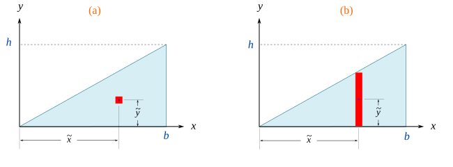
Fig. 81 .#
Aquí podemos utilizar cualquiera de los dos elementos diferenciales. Sólo debemos tener en consideración que si se utiliza el elemento diferencial de \((a)\), entonces resultará una integral doble, que deberemos integrar en los límites definidos por el área triangular. Si utilizamos el elemento diferencial \((b)\) se tendrá una integral simple, que deberemos integrar en los límites definidos para la dirección en \(x\), es decir, entre \(0\) y \(b\). Para ejemplificar vamos a proceder de ambas maneras. \
Utilizando el elemento diferencial \((a)\)
Calculando cada una de las integrales:
Sustituyendo los valores calculados:
Utilizando el elemento diferencial \((b)\)
En este caso las integrales simples se pueden plantear de la siguiente manera:
Observe que los resultados de las integrales son exactamente los mismos que obtuvimos con la manera anterior. La elección del elemento diferencial dependerá completamente de cuál le resulte más cómodo de plantear y resolver. En el caso de que se tenga una placa con densidad variable \(\rho(x,y)\), aquí sí o sí tendrá que usar una integral doble para determinar el centro de masa.
Ejemplo. Calcule el centro de masa del sólido mostrado en la figura. Considere que está conformado de un material homogéneo.
{kind=link}
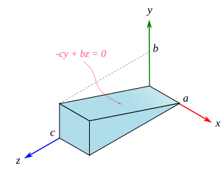
Fig. 82 Prisma triangular#
Solución:
Dado que \(\rho\) es constante, entonces el centro de masa coincidirá con el centroide del volumen del sólido, el cual podemos determinarlo mediante las siguientes ecuaciones:
La formulación de las integrales dependerá del elemento diferencial que se seleccione. Por ejemplo, si utilizamos un elemento diferencial como el mostrado en la Figura Fig. 83, es sencillo observar que las coordenadas centroidales de este elemento son: \(\tilde{x} = x, \tilde{y} = y, \tilde{z}=z\), y que el volumen diferencial está dado por \(dV = dx\, dy \, dz\).
{kind=link}
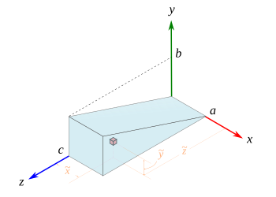
Fig. 83 .#
Tomando en cuenta lo anterior, la integral del volumen total se puede plantear como una integral triple:
Se debe tener cuidado con el orden de integración y los límites correspondientes; puede verificar fácilmente que podríamos primero integrar con respecto a \(y\), seguido de \(x\) y finalmente \(z\), y daría exactamente lo mismo, es decir:
O bien, igual podríamos considerar que la dirección en la cual se tiene el límite variable es \(z\), así pues:
Bueno, aclarado este punto, ahora podemos plantear el resto de las tres integrales:
Entonces, el centro de masa está dado por:
Otra manera de abordar este problema es utilizando un elemento diferencial como el mostrado en la Figura example_triangular_prism_center_of_mass_diff_element_plate. Note que en este caso el volumen del elemento y sus coordenadas centroidales están dadas por:
{kind=link}
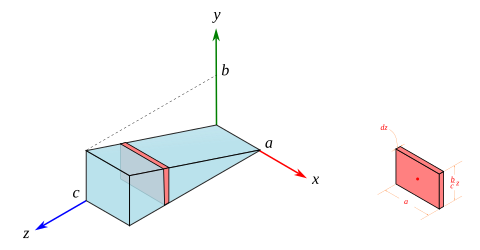
Fig. 84 .#
Planteando y resolviendo cada una de las integrales:
De lo cual resulta exactamente lo mismo que con el planteamiento previo:
La ventaja de usar este elemento diferencial es que las integrales a resolver son integrales simples, aunque ya habrá notado que ubicar las coordenadas centroidales del elemento implica un poco más de trabajo que en el primero.
Centro de masa de cuerpos compuestos#
Un cuerpo compuesto es aquel que está formado por la unión de dos o más cuerpos simples. Estos cuerpos simples pueden ser de diferentes formas y tamaños, y al unirse forman un cuerpo más complejo. Por ejemplo, un cuerpo compuesto puede estar formado por la unión de varios cubos, cilindros o prismas.
Para calcular el centro de masa de un cuerpo compuesto, es necesario dividir el cuerpo en una \(n\) cantidad de componentes simples, de los cuales sea sencillo determinar por separado su masa y centro de masa. Luego, las coordenadas del centro de masa estarán dadas por las siguientes expresiones:
Donde \(\tilde{x}_i, \tilde{y}_i, \tilde{z}_i\) corresponden a las coordenadas del centro de masa del \(i-\)ésimo cuerpo simple, y \(m_i\) corresponde a su masa. Expresiones similares se pueden plantear en el caso de que el sólido sea homogéneo (mismo material o misma densidad constante):
Y en el caso de que el sólido sea una placa delgada y homogénea:
Ejemplo. En la figura se muestra un sólido compuesto por dos porciones de placa cuadrangulares. Calcule el centro de masa del cuerpo compuesto. Considere que las placas son delgadas y de espesor uniforme. La masa de la sección 1 de 0.2 kg, y la sección 2 tiene una masa de 0.15 kg.
{kind=link}
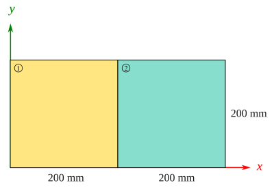
Fig. 85 .#
Solución:
Se puede verificar sin mucho problema que las coordenadas del centro de masa para cada sección son:
Entonces, el centro de masa del cuerpo compuesto estará dado por:
Momento de inercia de masa#
El momento de inercia de masa de un cuerpo rígido (o sistema de partículas) es una cantidad que determina el par necesario para una aceleración angular deseada alrededor de un eje de rotación, similar a cómo la masa determina la fuerza necesaria para una aceleración deseada. Depende de la distribución de masa del cuerpo y del eje elegido, un momento de inercia más grande implica que se requiere más torque para cambiar la velocidad de rotación del cuerpo en una cantidad determinada.
El momento de inercia (\(I\)) de una masa puntual (\(m\)) con respecto a un eje se define como el producto de la masa por la distancia al eje (\(d\)) elevada al cuadrado, es decir.
El momento de inercia de cualquier otra entidad se construye a partir de esa definición básica. Por ejemplo, para un sistema de partículas la definición anterior se puede expresar como:
Donde \(r_i\) corresponde a la distancia de cada partícula de masa \(m_i\) al eje. Si introducimos un sistema de referencia cartesiano \(xyz\) y calculamos los momentos de inercia con respecto a cada uno de sus ejes, se tiene que:
El momento de inercia de una distribución continua de masa (sólido rígido) se encuentra utilizando integración en lugar de la sumatoria. Si el sólido se divide en un elemento infinitesimal de masa \(dm\), y si \(r\) es la distancia desde el elemento de masa al eje de rotación, el momento de inercia se puede determinar como sigue:
Si se calcula el momento de inercia con respecto a los ejes de un sistema cartesiano, entonces:
Tome en cuenta que estas integrales se efectúan sobre la distribución de la masa. La formulación de las integrales a calcular depende mucho de cómo se establezca el elemento diferencial de masa y de la densidad del sólido.
Ejemplo. Calcule el momento de inercia de masa de la placa rectangular con respecto a los sistemas \(xyz\) y \(x_1 y_1 z_1\). Considere que la placa es de espesor delgado y uniforme, y que además es homogénea. El sistema \(x_1y_1z_1\) está ubicado en el centro de masa de la placa.
{kind=link}
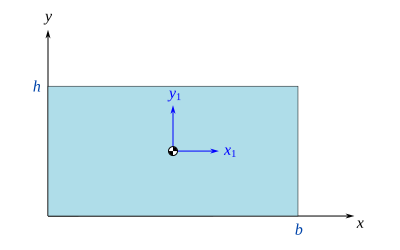
Fig. 86 .#
Momentos inercia con respecto a los ejes del sistema \(xyz\)
Calculando \(I_{xx}\)
Calculando \( I_{yy} \):
Calculando \( I_{zz} \):
Momentos inercia con respecto a los ejes del sistema \(x_1y_1z_1\)
Calculando \(I_{x_1x_1}\):
Calculando \(I_{y_1y_1}\):
Calculando \(I_{z_1z_1}\):
Teorema de los ejes paralelos#
Si se conoce el momento de inercia de un cuerpo respecto de un eje que pasa por su centro de masa, entonces se puede también determinar fácilmente el momento de inercia con respecto de cualquier otro eje que sea paralelo. En el esquema mostrado en la Figura Fig. 87 se tienen dos sistemas referencia, uno de estos tiene su origen en el centro de masa del cuerpo rígido.
{kind=link}
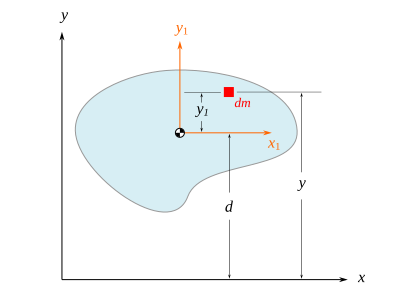
Fig. 87 .#
Vamos a suponer que necesitamos determinar el momento de inercia del sólido con respecto al eje \(x\), podríamos plantearlo de la siguiente manera:
Donde \(r_x\) es la distancia más corta desde la masa diferencial \(dm\) hasta el eje \(x\), observe que en este caso \( r_x = y = y_1 + d \), entonces podemos plantear la integral anterior como:
Expandiendo el binomio:
El primer término de esta expresión corresponde justamente al momento de inercia del sólido con respecto al eje \(x_1\) que pasa por su centro de masa, es decir:
La integral del segundo término corresponde al primer momento de masa, el cual cuando se determina con respecto al centro de masa es cero (recordar la definición de centro de masa), por lo tanto:
Finalmente, la integral del último término es simplemente la masa total del sólido, entonces:
Así, podemos expresar el momento de inercia con respecto al eje \(x\) como:
Este resultado es lo que se conoce de forma extendida como el teorema de los ejes paralelos. Observe que si conocemos el momento de inercia con respecto al eje \(x_1\) (que pasa por el centro de masa), entonces sería muy sencillo determinar el momento de inercia con respecto a cualquier otro eje \(x\) que sea paralelo, puesto que sólo necesitaríamos conocer la masa total del sólido y la distancia perpendicular entre el eje centroidal y el otro eje paralelo. Este procedimiento se puede replicar para cualquiera de los otros ejes cartesianos, de forma un poco más general, podemos expresar el teorema de los ejes paralelos de la siguiente manera:
Y enunciarlo de la forma habitual: el momento de inercia de un cuerpo rígido respecto a cualquier eje \(u\) que sea paralelo a un eje \(u'\) que pasa por su centro de masa, es igual al momento de inercia con respecto al eje \(u'\) más el producto de la masa total del cuerpo por el cuadrado de la distancia perpendicular entre los dos ejes.
El teorema de los ejes paralelos facilita los cálculos de los momentos de inercia para sólidos con geometrías simples, dado que evita en muchas situaciones la necesidad de integración, y en su lugar se utilizan las tablas de momento de inercia de masa en conjunto con el teorema. En la siguiente sección veremos también que es muy recurrido para cuando tengamos que determinar los momentos de inercia de sólidos compuestos.
Ejemplo. Utilice el teorema de los ejes paralelos para determinar los momentos de inercia con respecto a los ejes del sistema \(xyz\) de la placa rectangular mostrada en la Figura. Considera que la placa es de espesor delgado y uniforme, y que además es homogénea.
{kind=link}
Fig. 88 .#
Solución:
Utilizando el teorema de los ejes paralelos, el momento \(I_{xx}\) se puede determinar como sigue:
Donde \(d_{xx_1}\) es la distancia perpendicular entre los ejes \(x\) y \(x_1\), que en este caso es la mitad de la altura de la placa. El momento de inercia con respecto al eje \(x_1\) que pasa por el centro de masa está dado por:
Entonces:
De manera similar para \( I_{yy} \):
Y para \(I_{zz}\)
Momento de inercia de sólidos compuestos#
Para muchos sólidos compuestos, es posible dividirlos en partes más simples cuyos momentos de inercia sean fácilmente calculables. Una vez determinados estos momentos de inercia de cada parte simple, se pueden sumar para calcular el momento de inercia del sólido compuesto. Por ejemplo, el sólido de la Figura Fig. 89 se puede dividir en las tres partes simples que se observan (dos porciones rectangulares y una porción triangular). Así pues, el momento de inercia del sólido compuesto con respecto al eje \(x\) se puede determinar como sigue:
Donde \( \rbr{ I_{xx} }_i \) denota el momento de inercia de masa de la porción \(i\) con respecto al eje \(x\). Expresiones análogas se pueden plantear para \( I_{yy} \) e \( I_{zz} \), a saber:
Cada uno de los términos de la forma \( \rbr{ I_{xx} }_i \), \( \rbr{ I_{yy} }_i \) e \( \rbr{ I_{zz} }_i \) se pueden determinar mediante el teorema de los ejes paralelos.
{kind=link}
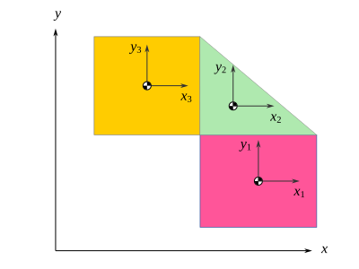
Fig. 89 Cuerpo compuesto#
De manera general, para un sólido compuesto por \(n\) partes simples, los momentos de inercia con respecto a los ejes de un sistema cartesiano \(xyz\) se pueden determinar mediante:
El término \(\rbr{ I_{xx} }_i\) es el momento de inercia de la parte \(i\) con respecto al eje \(x\), y de manera similar para los correspondientes de \(y\) y \(z\). Cada uno de los términos de las sumatorias anteriores se pueden determinar mediante el teorema de los ejes paralelos, es decir:
En lo anterior, \(\bar{ I }_{x_ix_i}\) corresponde al momento de inercia de la parte \(i\) con respecto al eje \(x_i\) que pasa su centro de masa, \(m_i\) es la masa de dicha parte y \(d_{xx_i}\) es la distancia más corta entre los ejes \(x\) y \(x_i\). Y así de manera análoga para los otros dos ejes.
Ejemplo. En la figura se muestra un sólido compuesto por dos porciones de placa cuadrangulares. Determina los momentos de inercia con respecto a los ejes del sistema mostrado. Considera que las placas son delgadas y de espesor uniforme. La masa de la porción 1 es de 0.2 kg y la de la porción 2 es de 0.15 kg.
Fig. 90 .#
Solución:
El momento de inercia del cuerpo compuesto corresponde a la suma de los momentos de inercia de cada una porciones, con respecto a cada uno de los ejes correspondientes.
El momento de inercia \( I_{xx} \) se puede determinar mediante:
Donde \( \left(I_{xx}\right)_1 \) y \( \left(I_{xx}\right)_2 \) son los momentos de inercia de masa con respecto al eje \(x\), de cada una de las porciones, respectivamente. Para \( \left(I_{xx}\right)_1 \) se tiene que:
Donde \( \bar{I}_{x_1x_1} \) es el momento de inercia con respecto al eje \(x_1\) que pasa por el centroide de la parte 1. Sustituyendo los valores numéricos:
De manera similar para \( \rbr{I_{xx}}_2 \):
Entonces:
El momento de inercia \( I_{yy} \) se puede determinar mediante:
Calculando \( \rbr{ I_{yy} }_1 \):
Para \( \rbr{ I_{yy} }_2 \):
Por lo tanto:
Finalmente, para \( I_{zz} \):
Entonces:
Ejemplo. En la Figura se muestra un sólido fabricado en un tipo de acero cuya densidad es \(\rho = 7850\) kg/m\(^3\). Calcule los momentos de inercia \(I_{xx}\), \(I_{yy}\) e \(I_{zz}\).
{kind=link}
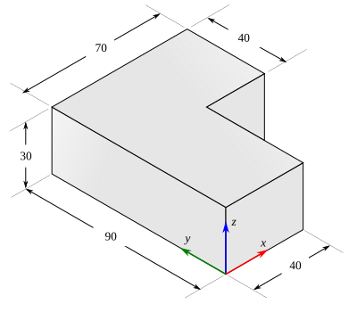
Fig. 91 .#
Solución:
Este sólido compuesto podemos seccionarlo en dos prismas rectangulares simples, tal como se muestra en la Figura Fig. 92.
{kind=link}
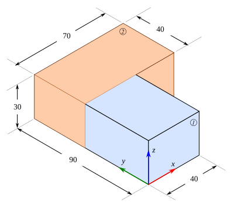
Fig. 92 .#
La masa de cada una de estas porciones se puede determinar como sigue:
Calculando el momento de inercia con respecto a \(x\):
Calculando el momento de inercia con respecto a \(y\):
Calculando el momento de inercia con respecto a \(z\):
Productos de inercia#
Los productos de inercia de masa son cantidades utilizadas para describir la distribución de la masa en un sólido en movimiento. Estos productos son esenciales para entender el comportamiento de un cuerpo cuando se somete a rotación alrededor de un eje en un sistema de coordenadas tridimensional. Los productos de inercia pueden entenderse también como una medida de la simetría del cuerpo con respecto a un sistema de referencia.
Comenzaremos con los productos de inercia de un sistema de partículas ubicadas en el espacio, los cuales pueden determinarse mediante las siguientes expresiones:
Donde \(x_i, y_i, z_i\) corresponden a las coordenadas de la ubicación de cada partícula de masa \(m_i\). En la Figura \ref{fig:products_of_inertia} se muestra un sistema de dos partículas ubicadas en el plano \(xy\), distribuidas de diversas maneras. Primero, de las ecuaciones anteriores se puede verificar de forma sencilla que \( I_{xz} = I_{yz} = 0 \), dado que para ambas partículas \( z_i=0 \). Para el caso de la Figura \ref{fig:products_of_inertia}a) se puede observar que el producto de inercia \( I_{xy} \) está dado por:
Si ambas partículas poseen masas de igual magnitud, entonces \( I_{xy} = 0 \), dado que en dicho caso existiría también una simetría con respecto al plano \(xz\). Esto nos lleva a un par de conclusiones que podemos verificar en los ejemplos que se resolverán posteriormente:
Simetría y productos de inercia
Si un sistema de partículas (o un cuerpo rígido) es simétrico con respecto a un plano, entonces los productos de inercia que contengan al eje perpendicular a este plano serán cero.
Si un sistema de partículas (o un cuerpo rígido) es simétrico con respecto a dos planos, entonces todos los productos de inercia son cero.
Para el sistema de la Figura Fig. 93b) se puede verificar que:
Un resultado igual al que se había observado para el caso anterior. Aquí valdría la pena agregar que si:
\(m_1 > m_2\), entonces \( I_{xy} < 0 \).
\(m_1 < m_2\), entonces \( I_{xy} > 0 \).
En el caso del sistema de la Figura Fig. 93c) el producto de inercia \(I_{xy}\) está dado por:
Aquí podemos notar que, independiente de las magnitudes de \(m_1\) y \(m_2\), el producto de inercia será negativo.
Finalmente, para el sistema de la Figura Fig. 93d) el producto de inercia se calcula como:
En este caso \( I_{xy} \) será siempre una cantidad positiva. Aprovechando los resultados anteriores se puede establecer lo siguiente:
Signos del producto de inercia
Si la masa se concentra en los cuadrantes I y/o III, entonces el producto de inercia \(I_{xy}\) será negativo.
Si la masa se concentra en los cuadrantes II y/o IV, entonces el producto de inercia \(I_{xy}\) será positivo.
Lo anterior puede dilucidarse observando que para una sola partícula \( I_{xy} = - x y m \), y dado que \(m\) es una cantidad positiva, entonces el signo de \( I_{xy} \) dependerá únicamente de la combinación de los signos de \(x\) y \(y\); a partir de esto puede inferirse que si \( x>0 \) y \( y>0 \) (cuadrante I) entonces \( I_{xy} \) será negativo, y así de manera similar para los cuadrantes restantes.
{kind=link}
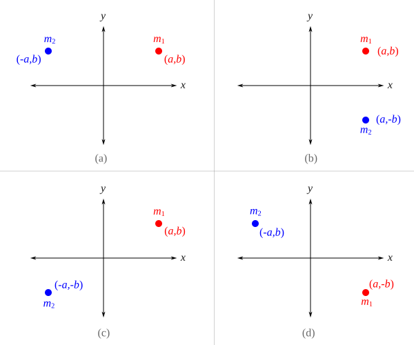
Fig. 93 Dos masas puntuales en el plano \(xy\)#
Lo visto anteriormente para un sistema de partículas, se puede generalizar para el caso de un sólido rígido mediante el uso de las siguientes expresiones:
Ejemplo. En la Figura se muestra una placa plana homogénea de forma rectangular, con espesor delgado y uniforme. Calcule los productos de inercia de masa con respecto a los sistemas \(xyz\) y \(x_1y_1z_1\) que se muestran.
Fig. 94 .#
Solución:
Debido a que el plano \(xy\) es un plano de simetría para la placa, entonces los productos de inercia \( I_{xz} \) e \( I_{yz} \) son ambos cero. El producto de inercia \( I_{xy} \) se puede determinar como sigue:
Observe \( I_{xy} \) es una cantidad negativa, lo cual se puede inferir de la figura, dado que la masa de la placa se distribuye toda en el primer cuadrante del plano \(xy\).
Note que todos los productos de inercia en el sistema de referencia \(x_1y_1z_1\) son cero, debido a que todos los planos de dicho sistema son planos de simetría para la placa rectangular, entonces:
Teorema de los planos paralelos#
Si se conocen los productos de inercia de un sólido respecto de un sistema de referencia que pasa por su centro de masa, entonces se pueden también determinar fácilmente los productos de inercia con respecto de cualquier otro sistema de referencia que sea paralelo. En la Figura Fig. 95 se muestra una placa plana, delgada y homogénea, en la cual se tienen dos sistemas referencia, teniendo uno de estos su origen en el centro de masa del cuerpo rígido. De la Figura se puede observar que tanto \(I_{xz}\) como \( I_{yz} \) son cero, debido a que al plano \(xy\) es un plano de simetría.
{kind=link}
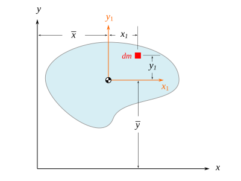
Fig. 95 .#
Para calcular el producto de inercia \(I_{xy}\) se tiene que:
De la primera integral se tiene que:
Las integrales del segundo y tercer término corresponden al primer momento de masa, el cual cuando se determina con respecto al centro de masa es cero (recordar la definición de centro de masa), por lo tanto:
La integral del último término corresponde al producto de inercia \(x_1 y_1\) con respecto al sistema de referencia que pasa por el centro de masa, es decir:
Entonces, el producto de inercia \(I_{xy}\) se puede expresar como:
Expresiones análogas se pueden formular para los productos de inercia \( I_{xz} \) e \( I_{yz} \) en el caso de que se tenga un sólido tridimensional asimétrico con respecto a los planos, a saber:
Ejemplo. En la Figura se muestra una placa plana homogénea de forma rectangular, con espesor delgado y uniforme. Utilice el teorema de los planos paralelos para determinar el producto de inercia \(I_{xy}\).
Fig. 96 .#
Solución:
De acuerdo con el teorema de los planos paralelos, podemos calcular el producto de inercia \(I_{xy}\) mediante:
Donde \(\bar{I}_{x_1y_1}\) es el producto de inercia con respecto al sistema \(x_1y_1z_1\) ubicado en el centro de masa de la placa rectangular; sin embargo, es sencillo notar que todos los planos del sistema \(\{1\}\) son planos de simetría, lo cual implica que \( \bar{I}_{x_1y_1} = \bar{I}_{x_1z_1} = \bar{I}_{y_1z_1} = 0\). Además, se puede observar que \( \bar{x} = b/2 \) y \( \bar{y} = h/2 \)
Observe que este resultado coincide con el que se obtuvo mediante integración en un ejemplo anterior.
Productos de inercia de cuerpos compuestos#
Los productos de inercia de un cuerpo compuesto de \(n\) partes simples, con respecto a un sistema de referencia \(xyz\), se pueden determinar calculando por separado los productos de inercia de cada una de las partes y sumándolos, es decir:
El término \(\rbr{ I_{xy} }_i\) es el producto de inercia \(I_{xy}\) de la parte \(i\) con respecto al sistema \(xyz\), y de manera similar para los correspondientes productos de inercia \(I_{xz}\) e \(I_{yz}\). Cada uno de los términos de las sumatorias anteriores se pueden determinar mediante el teorema de los planos paralelos revisado en la sección anterior, es decir:
En lo anterior, \(\bar{I}_{x_iy_i}\) corresponde al producto de inercia de la parte \(i\) con respecto al sistema \(x_iy_iz_i\) que pasa su centro de masa, \(m_i\) es la masa de dicha parte, \(\bar{x}_i\) y \(\bar{y}_i\) corresponden a las coordenadas en \(x\) y \(y\) del CDM de la parte \(i\). Y así de manera análoga para los otros dos productos de inercia.
Ejemplo. En la Figura se muestra un cuerpo compuesto por tres partes rectangulares, de espesor delgado y uniforme. Se sabe que \(m_1 = 0.121\) kg, \(m_2=0.104\) kg y \(m_3=0.226\) kg. Calcule los productos de inercia del cuerpo compuesto con respecto al sistema \(xyz\) mostrado.
{kind=link}
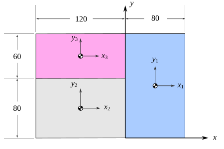
Fig. 97 .#
Solución:
Puesto que la placa es delgada y uniforme, el plano \(xy\) es un plano de simetría, y en consecuencia \(I_{xz}=0\) e \( I_{yz} = 0 \). El producto de inercia \(I_{xy}\) está dado por la suma de los productos de inercia de cada porción, es decir:
Calculando cada uno de estos términos mediante la aplicación del teorema de los planos paralelos, se tiene:
Se debe tener en cuenta que, por la simetría de los sistemas de referencia ubicados en el centro de masa, los productos de inercia \(\bar{I}_{x_1y_1}\), \(\bar{I}_{x_2y_2}\) y \(\bar{I}_{x_3y_3}\) son cero. Sumando los productos de inercia calculados se tiene que:
Ejes principales de inercia#
Dinámica de manipuladores seriales: formulación de Euler-Lagrange#
En esta sección veremos cómo obtener el modelo dinámico de un manipulador serial utilizando las ecuaciones de Euler-Lagrange. Una de las ventajas de esta formulación es que las ecuaciones de movimiento pueden ser obtenidas de manera sistemática, independientemente del sistema de referencia.
El primer paso es identificar un conjunto de coordenadas generalizadas que sea apropiado para analizar el manipulador, en este texto se utilizarán las variables articulares de posición del manipulador como coordenadas generalizadas (\(q_1, q_2, q_3, \cdots, q_n\)), asumiremos también que estás posiciones articulares son definidas y medidas de acuerdo con los visto en el capítulo de Cinemática directa. Una vez que se elige un conjunto de coordenadas generalizadas apropiadas, se procede a formar el lagrangiano del manipulador, recordar que este es una función escalar dada por la diferencia de la energía cinética y potencial:
Asumimos que la energía potencial \(\Po\) es debida únicamente a fuerzas conservativas, como la energía potencial asociada con la gravedad y la almacenada en resortes. En secciones previas vimos cómo calcular tanto la energía cinética como la potencial de un cuerpo rígido, ahora en las secciones posteriores estableceremos expresiones adaptadas para calcular estas energías para un eslabón que pertenece a un manipulador serial.
Con el lagrangiano ya definido, procedemos a calcular las ecuaciones de movimiento de Euler-Lagrange:
Para un manipulador de \(n\) grados de libertad se obtendrán \(n\) ecuaciones diferenciales de segundo orden que modelan su comportamiento dinámico. Este comportamiento se puede simular si resolvemos el sistema de ecuaciones diferenciales, lo cual usualmente se hará mediante métodos numéricos. Naturalmente este modelo dinámico se puede utilizar también para el diseño e implementación de algoritmos de control.
Energía cinética de un eslabón#
\(\newcommand{\KiEq}[1]{ \frac{1}{2} m_{#1} \vec{v}_{G_{#1}}^T \vec{v}_{G_{#1}} + \frac{1}{2} \boldsymbol{\omega}_{#1}^T I_{#1} \boldsymbol{\omega}_{#1} } \newcommand{\Icm}[1]{ I_{#1}^{{#1}'} } \) Un eslabón de un manipulador serial es un cuerpo rígido y por lo tanto se puede utilizar la ecuación (62) para determinar su energía cinética, aquí estableceremos una versión ligeramente modificada, únicamente con el propósito de sistematizar un poco la obtención de las ecuaciones, así pues para el i-ésimo eslabón de un manipulador serial su energía cinética se puede determinar mediante:
Donde \(m_i\) es la masa del eslabón, \(\vec{v}_{G_i}\) es la velocidad lineal del centro de masa del eslabón \(i\), \(\boldsymbol{\omega}_i\) es la velocidad angular del eslabón \(i\) y el término \(I_i\) corresponde al tensor de inercia del eslabón. Es importante tener en cuenta que los vectores \(\vec{v}_{G_i}\) y \(\boldsymbol{\omega}_i\) están expresados en el sistema de la base \(\{0\}\).
El tensor de inercia \(I_i\) es una matriz simétrica que caracteriza la inercia rotacional de cada eslabón con respecto a un sistema de referencia paralelo al de la base, pero ubicado en el centro de masa del eslabón \(i\). Este tensor se puede formar de manera más conveniente, si en primera instancia se determina el tensor \(\Icm{i}\), es decir, el tensor de inercia del eslabón \(i\) descrito en un sistema de referencia \(\{i'\}\) ubicado en su centro de masa y que es paralelo al sistema \(\{i\}\) del eslabón.
Así, \(\Icm{i}\) es una matriz constante y se puede relacionar con \(I_i\) mediante la siguiente transformación de similitud:
El tensor de inercia \(\Icm{i}\) del eslabón se puede formar utilizando los métodos y ecuaciones vistos en las secciones previas.
Energía potencial de un eslabón#
\( \newcommand{\PoEq}[1]{ - m_{#1} \vec{g}^T \vec{r}_{G_#1} } \) La energía potencial del eslabón \(i\) de un manipulador está dada por:
Donde \(m_i\) es la masa de dicho eslabón, \(\vec{g}\) es el vector que describe la aceleración de la gravedad en el sistema de la base y \( \vec{r}_{G_i} \) es un vector que describe la ubicación del centro de masa del eslabón \(i\) con respecto al sistema de la base.
Calculando el lagrangiano#
Una vez que se han calculado las energías cinética y potencial de cada uno de los eslabones que conforman el manipulador, se procede a sumarlas para determinar la energía total en cada caso. La energía cinética total está dada por:
Para la energía potencial total:
Así, el lagrangiano se obtiene mediante:
Un resumen: modelo dinámico con la formulación de Euler-Lagrange#
Calcular la energía cinética de cada uno de los eslabones del manipulador utilizando la ecuación: $\( \Ki_i = \KiEq{i} \)$.
La velocidad del centro de masa \(\vec{v}_{G_i}\) se puede calcular derivando con respecto al tiempo el vector de posición del centro de masa \(\vec{r}_{G_i}\).
El vector \(\vec{r}_{G_i}\) se puede calcular de manera más sencilla si primero se forma el vector \( \vec{r}_{G_i}^{i} \), es decir, la posición del centro de masa del eslabón \(i\) descrita en el sistema de referencia \(\{i\}\). Tome en cuenta que \( \vec{r}_{G_i}^{i} \) es un vector cuyas componentes son constantes. Luego, \( \vec{r}_{G_i} \) se puede determinar mediante una transformación de coordenadas:
\[ \vec{r}_{G_i} = T_i^0 \vec{r}_{G_i}^{i} \]Donde \(T_i^0\) es la matriz de transformación homogénea que describe al sistema \(\{i\}\) en el sistema \(\{0\}\).
El vector de velocidad angular \(\boldsymbol{\omega}_i\) se puede determinar utilizando la ecuación:
\[ \boldsymbol{\omega}_i = \W_{0,1} + \W_{1,2} + \ldots + \W_{i-1,i} \]Donde cada vector de la forma \(\W_{j-1,j}\) se puede formar como sigue:
\[\begin{split} \W_{j-1,j} = \begin{cases} \dot{q}_j \, \vec{z}_{j-1} & \text{en el caso de que la junta $j$ sea revoluta} \\ \vec{0} & \text{en el caso de que la junta $j$ sea prismática} \end{cases} \end{split}\]Calcular la energía potencial de cada uno de los eslabones.
El vector de gravedad \(\vec{g}\) es un vector que determina la dirección de la aceleración de la gravedad en el sistema inercial de la base \(\{0\}\).
El vector \( \vec{r}_{G_i} \) es el vector que describe la ubicación del centro de masa del eslabón en el sistema \(\{0\}\). En el listado previo se hace una sugerencia de cómo calcularlo.
Calcular el lagrangiano, para esto simplemente:
Calcular las ecuaciones de movimiento de Lagrange:
\(\newcommand{\LaEqA}[1]{\frac{d}{dt}\left( \frac{\partial\mathcal{L}}{\partial \dot{q}_{#1}} \right)} \newcommand{\LaEqB}[1]{\frac{\partial\mathcal{L}}{\partial q_{#1}}} \newcommand{\rowvec}[3]{\begin{bmatrix}#1\end{bmatrix}} \newcommand{\qp}[1]{\dot{q}_{#1}} \newcommand{\qpp}[1]{\ddot{q}_{#1}} \)
Ejemplo. Obtenga el modelo dinámico del manipulador P mostrado en la figura. El eslabón 1 tiene una masa \(m_1\) y su centro de masa coincide con el origen de coordenadas del sistema \(\{1\}\).
{kind=link}
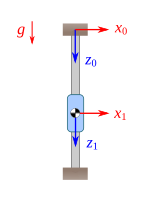
Fig. 98 .#
Solución:
Calculando la energía cinética del eslabón 1:
Donde:
La energía potencial del eslabón está dada por:
Calculando el lagrangiano:
Ecuaciones de movimiento de Lagrange:
Por lo tanto, la EDO que representa la dinámica del manipulador está dada por:
\(\newcommand{\colvec}[3]{\begin{bmatrix}#1\\#2\\#3\end{bmatrix}} \newcommand{\colvech}[4]{\begin{bmatrix}#1\\#2\\#3 \\ #4\end{bmatrix}} \newcommand{\rG}[1]{ \vec{r}_{G_{#1}} } \newcommand{\vG}[1]{ \vec{v}_{G_{#1}} } \newcommand{\lc}[1]{ l_{c_{#1}} } \newcommand{\KiTraEq}[1]{ \frac{1}{2} m_{#1} \vec{v}_{G_{#1}}^T \vec{v}_{G_{#1}} } \newcommand{\KiRotEq}[1]{ \frac{1}{2} \bm{\omega}_{#1}^T I_{#1} \bm{\omega}_{#1} } \newcommand{\Isym}[1]{ \begin{bmatrix} I_{x_{#1}x_{#1}} & 0 & 0 \\ 0 & I_{y_{#1}y_{#1}} & 0 \\ 0 & 0 & I_{z_{#1}z_{#1}} \\ \end{bmatrix} } \renewcommand{\bm}[1]{\boldsymbol{#1}} \)
Ejemplo. Obtenga el modelo dinámico del manipulador PR mostrado en la Figura. Considere que tanto el eslabón 1 como el 2 son simétricos con respecto al menos dos planos del sistema ubicado en su centro de masa. La longitud del eslabón 2 es \(l_2\).
{kind=link}
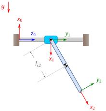
Fig. 99 .#
Solución:
De la cinemática directa se sabe que:
Calculando la energía cinética del eslabón 1:
Dado que la primera articulación es traslacional, entonces \(\W_1 = \vec{0}\), y el término de la energía cinética rotacional se hace cero. El vector \(\vec{r}_{G_1}\) está dado por:
Entonces:
Por lo cual:
Para la energía cinética del eslabón \(2\):
El vector \( \rG{2} \) se puede determinar como sigue:
Entonces:
Calculando la energía cinética traslacional:
Para calcular la energía cinética rotacional del eslabón \(2\), debemos calcular \(\W_2\):
Dado que el eslabón \(2\) es simétrico con respecto al menos dos planos del sistema de su centro de masa, entonces el tensor de inercia \(\Icm{2}\) tiene la forma:
Recordar que el tensor de inercia \(I_2\) se puede determinar mediante \(R_2^0 \Icm{2} \rbr{R_2^0}^T\). Entonces, calculando la energía cinética rotacional se tiene:
Entonces:
Calculando la energía potencial del eslabón \(1\):
Calculando la energía potencial del eslabón \(2\):
Una vez calculadas las energías cinéticas y potenciales, podemos formar el lagrangiano:
Calculando las ecuaciones de movimiento de Lagrange:
Modelo dinámico en forma matricial#
La energía cinética de un eslabón del manipulador serial se puede calcular como:
Tanto la velocidad del centro de masa como la velocidad angular del eslabón se pueden expresar utilizando los jacobianos correspondientes, es decir:
Lo cual que implica que:
Entonces, la energía cinética del eslabón \(i\) se puede reescribir como:
Si consideramos ahora la energía cinética total, entonces:
Donde:
La matriz \(M(\vec{q})\) se denomina matriz de inercia (o matriz de masas), es una matriz de \(n\times n\) que caracteriza cómo la masa y su distribución afectan la relación de las fuerzas y aceleraciones articulares. Es una matriz simétrica y definida positiva, posteriormente abordaremos con más detenimiento estas propiedades.
La energía potencial \(\Po\) no tiene una forma particular como en el caso de la energía cinética, pero se sabe que depende de las posiciones articulares \(\vec{q}\). El langrangiano, definido en secciones previas, se puede escribir entonces como:
Con esto, la ecuación de Lagrange se puede establecer como:
Se puede verificar que:
Considerando las expresiones anteriores, la ecuación de movimiento toma la siguiente forma:
O en forma compacta:
Donde
La ecuación (79) corresponde a la dinámica de un manipulador de \(n\) grados de libertad. \(C(\vec{q},\vec{\qp{}}) \vec{\qp{}}\) es un vector de \(n\) elementos denominado vector de fuerzas centrífugas y de Coriolis, \( \vec{g}(\vec{q}) \) es un vector de \(n\) elementos que contiene las fuerzas y pares gravitacionales. El vector \(\tauvec\) es el vector de fuerzas y pares externos.
La matriz de fuerzas centrífugas y de Coriolis \( C(\vec{q}, \vec{\qp{}})\) puede no ser unica, pero el vector \(C(\vec{q},\vec{\qp{}}) \vec{\qp{}}\) si que lo es. Cada elemento \(c_{ij}\) de la matriz \( C(\vec{q}, \vec{\qp{}})\) se puede determinar mediante:
Donde los coeficientes \( c_{ijk} \) se denominan símbolos de Christoffel de primer tipo, y se pueden determinar mediante:
Donde \( m_{ij} \) denota el \(ij\)-ésimo elemento de la matriz de inercia.
\(\newcommand{\cijk}[3]{ \frac{1}{2} \left( \frac{\partial m_{#1#2}}{\partial q_{#3}} + \frac{\partial m_{#1#3}}{\partial q_{#2}} - \frac{\partial m_{#2#3}}{\partial q_{#1}} \right)} \)
Ejemplo. Obtenga el modelo dinámico en forma compacta del manipulador RP mostrado en la figura. Considere que ambos eslabones son simétricos con respecto al menos dos planos del sistema ubicado en su centro de masa.
Fig. 100 .#
Solución:
Las matrices de cinemática directa del manipulador están dadas por:
Debido a las condiciones de simetría, los tensores de inercia de cada eslabón expresados en su propio sistema de referencia están dados por:
Calculando los jacobianos de cada eslabón:
Procedemos a formar la matriz de inercia \(M\):
Ahora procedemos a determinar la matriz de Coriolis, cada uno de sus elementos está dado por:
Calculando los coeficientes \(c_{ijk}\):
Por lo tanto:
Para el vector de pares y fuerzas gravitacionales:
Por lo tanto, el modelo dinámico del manipulador RP en forma compacta queda expresado de la siguiente manera:
El vector \( \vec{\tau} \)#
El vector \( \vec{\tau} \)#
En la ecuación (78) el término \(\tau_i\) corresponde a la fuerza y/o torque aplicados en la dirección de la i-ésima coordenada generalizada, naturalmente, si las fuerzas externas se aplican en una dirección que no se corresponde con las coordenadas generalizadas, entonces se deben proyectar las fuerzas externas en la dirección de dichas coordenadas.
Consideremos primeramente que se tiene un manipulador serial sujeto a una fuerza \(\vec{F}_1\) y un torque \(\bm{\mu}_1\) aplicados en el punto \(B_1\). Si tanto \(\vec{F}_1\) como \(\bm{\mu}_1\) se expresan en el sistema de referencia de la base, entonces es posible proyectarlos en la dirección de las coordenadas generalizadas del manipulador, mediante la siguiente ecuación:
Donde \(J_{B_1}\) es la matriz jacobiana, \(\rbr{J_v}_{B_1}\) es el jacobiano de velocidad lineal y \(\rbr{J_{\W}}_{B_1}\) el jacobiano de velocidad angular, en todos los casos calculadas en el punto \(B_1\). Puede revisar la sección La matriz jacobiana de un punto del manipulador} para recordar cómo determinar las matrices jacobianas asociadas con un punto del manipulador.
La ecuación anterior se puede reescribir para cuando se tienen varias fuerzas y torques aplicados en diversas ubicaciones del manipulador serial, así pues, para una \(N\) cantidad de fuerzas y torques aplicados en un manipulador serial se tiene:
En las ecuaciones previas el término \(\tauvec\) es el vector de las fuerzas generalizadas:
Ejemplo. Determine la fuerza generalizada \(\tauvec\) para el manipulador R mostrado en la Figura Fig. 101, considerando que está sujeto a una carga externa \(F\) aplicada en su extremo, de magnitud constante y que permace siempre en dirección vertical hacia abajo, tal como se esquematiza.
{kind=link}
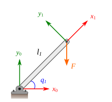
Fig. 101 .#
Solución:
El vector de fuerzas generalizadas para el manipulador R se puede determinar mediante:
Donde \(\rbr{J_v}_{o_1}\) es el jacobiano de velocidad lineal extremo del manipulador (punto \(o_1\)), el cual puede determinarse de la siguiente manera:
Dado que \(\vec{F}\) permanece siempre apuntando en dirección vertical hacia abajo, entonces:
Por lo tanto:
Entonces:
Propiedades del modelo dinámico#
Formulación de Newton-Euler#
Obtención del modelo dinámico utilizando Python#
En esta sección veremos cómo obtener, utilizando Python y la librería SymPy, el modelo dinámico de un manipulador serial mediante la formulación de Euler-Lagrange.
Primero, vamos a procurar comprender cómo podemos obtener, de forma sistematizada, el modelo dinámico de un manipulador. Comenzaremos teniendo en cuenta que para determinar cada ecuación de movimiento de Lagrange, necesitamos conocer el lagrangiano (\(\La\)) del manipulador, y para calcular este requerimos conocer tanto la energía cinética como la energía potencial de cada uno de los eslabones que conforman el manipulador. Para calcular estas energías necesitamos determinar posición y velocidad del centro de masa, velocidad angular del eslabón, el tensor de inercia del eslabón y el vector de gravedad. Y así podríamos seguir describiendo lo que se requiere para formar cada uno de los términos subsiguientes. En la Figura dynamic_model_diagram se muestra un diagrama que pone de manifiesto algunos de los términos o cantidades requeridas para formar el modelo dinámico.
En los niveles más bajos de cada una de las ramas del diagrama de árbol mostrado en dynamic_model_diagram se puede observar que se requieren las siguientes cantidades:
Las matrices de transformación \(T_i^0\)
Las matrices de rotación \(R_i^0\)
Los vectores de posición \(\vec{r}_{G_i}^i\)
Los tensores de inercia \(\Icm{i}\)
Las velocidades angulares \(\W_{j-1,j}^{j-1}\)
Las masas de los eslabones \(m_i\)
El vector de gravedad \(\vec{g}\)
Primero, es importante notar que \(R_i^0\) es una submatriz de \(T_i^0\), en consecuencia, si calculamos \(T_i^0\) tendríamos también a \(R_i^0\). De la cinemática directa sabemos que cada matriz \(T_i^0\) se puede calcular mediante composición de matrices de la siguiente manera:
Es decir, necesitamos determinar previamente cada una de las matrices de la forma \(T_{i}^{i-1}\) para el manipulador. Recuerde que estas matrices se obtienen directamente al sustituir los parámetros de Denavit-Hartenberg del manipulador en la matriz dada por la ecuación (25). Así pues, lo primero que notamos es que necesitamos conocer los parámetros de Denavit-Hartenberg, se asumirá que estos parámetros se proporcionarán como datos de entrada.
Los vectores de posición \(\vec{r}_{G_i}^i\) describen la ubicación del centro de masa de cada uno de los eslabones, en el sistema de referencia \(\{i\}\). Estos vectores no se pueden calcular a partir de otros datos, se asumirá que son datos de entrada que deberán ser proporcionados.
Los tensores de inercia \(\Icm{i}\) describen las propiedades de inercia de cada eslabón con respecto a un sistema de referencia ubicado en su centro de masa y paralelo al sistema \(\{i\}\). Consideraremos que estas matrices se proporcionarán como datos de entrada.
El término \(\W_{j-1,j}^{j-1}\) corresponde a la velocidad angular de cada eslabón (\(\rbr{j}\)) con respecto al eslabón inmediatamente anterior \(\rbr{j-1}\), descrita en el sistema de referencia adherido a ese eslabón previo \(\{j-1\}\). Las velocidades angulares \(\W_{j-1,j}^{j-1}\), de acuerdo con lo visto en la sección Velocidades angulares en un manipulador serial tienen siempre la forma:
Es decir, todo lo que necesitamos es saber el tipo de cada una de las juntas que conforman el manipulador, asumiremos entonces que esto deberá ser un dato de entrada.
Tanto la masa de los eslabones \(m_i\), como el vector de gravedad \(\vec{g}\), son cantidades que no se pueden determinar a partir de algún otro dato, así que asumiremos que se proporcionarán como datos de entrada.
De acuerdo con lo visto hasta ahora, podemos establecer que se requieren al menos los siguientes valores conocidos (o datos de entrada) para poder comenzar con el cálculo del modelo dinámico:
Los parámetros de Denavit-Hartenberg
Los vectores de posición \(\vec{r}_{G_i}^i\)
Los tensores de inercia \(\Icm{i}\)
Los tipos de junta o articulación
La masa de los eslabones \(m_i\)
El vector de gravedad \(\vec{g}\)
Problemas#
En la Figura se muestra una placa delgada, de espesor uniforme y homogénea, con forma semicircular de radio \(R\). Utiliza integración para determinar: a) la ubicación del centro de masa, b) los momentos de inercia \(I_{xx}\), \(I_{yy}\) y c) el producto de inercia \(I_{xy}\).
{kind=link}
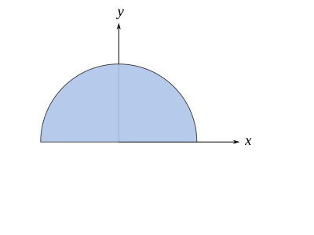
Fig. 102 .#
Respuesta:
Utiliza el teorema de ejes paralelos para calcular el momento de inercia de la placa semicircular (ver .) con respecto a un eje \(x'\) que pasa por el centro de masa y paralelo al eje \(x\) de la figura.
Respuesta:
En la Figura se muestra una placa delgada, de espesor uniforme y homogénea. Se sabe que posee una densidad \( \rho_A = 40 \text{kg/m}^2 \). Utilizando integración calcule:
La ubicación del centro de masa.
El momento de inercia \(I_{zz}\)
El producto de inercia \( I_{xy} \)
{kind=link}
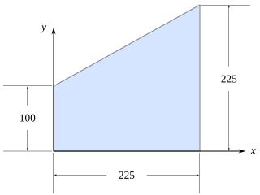
Fig. 103 .#
El componente mecánico mostrado en la Figura está fabricado con una lámina de espesor delgado (3 mm) y uniforme, el material de la lámina tiene una densidad \(\rho =2700 \text{ kg/m}^3\). El orificio circular tiene un radio de 50 milímetros. Calcula, a) la ubicación del centro de masa y b)el tensor de inercia con respecto al sistema mostrado.
{kind=link}
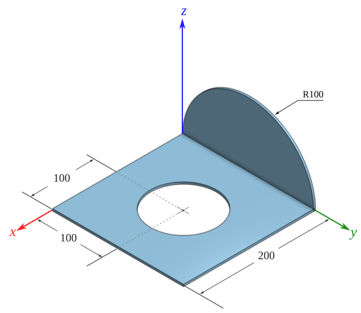
Fig. 104 .#
Resultados:
En la figura se muestra una placa compuesta delgada y de espesor uniforme, está conformada por dos secciones de diferente material unidas rígidamente. Se sabe que \(m_1 = 0.130\) kg y \(m_2 = 0.452\) kg. Las unidades de longitud son milímetros. Calcule a) el centro de masa, b) los momentos de inercia y c) los productos de inercia.
{kind=link}
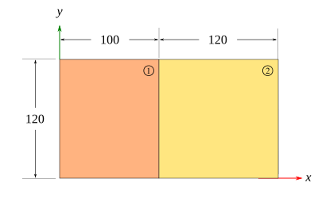
Fig. 105 .#
En la figura se muestra una placa compuesta delgada y de espesor uniforme, está conformada por dos secciones de diferente material unidas rígidamente. Se sabe que \(m_1 = 0.152\) kg y \(m_2 = 0.265\) kg. Calcule a) el centro de masa, b) los momentos de inercia y c) los productos de inercia. Las unidades de longitud son milímetros.
{kind=link}
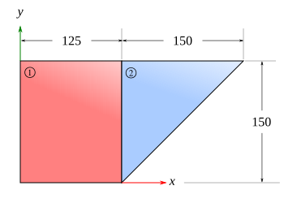
Fig. 106 .#
En la figura se muestra una placa compuesta delgada y de espesor uniforme, está conformada por dos secciones de diferente material unidas rígidamente. Se sabe que \(\rho_1= 10.8\text{ kg}/m^2\) y \(\rho_2 = 31.4 \text{ kg}/m^2\) kg. Calcule a) el centro de masa, b) los momentos de inercia y c) los productos de inercia. Las unidades de longitud son milímetros.
{kind=link}
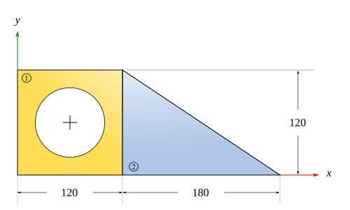
Fig. 107 .#
Para el sólido mostrado en la figura, calcule:
El centro de masa
Los momentos de inercia
Los productos de inercia
Considere que el sólido es de un material homogéneo cuya densidad es de \(2700 \, \text{kg}\cdot \text{m}^3\).
{kind=link}
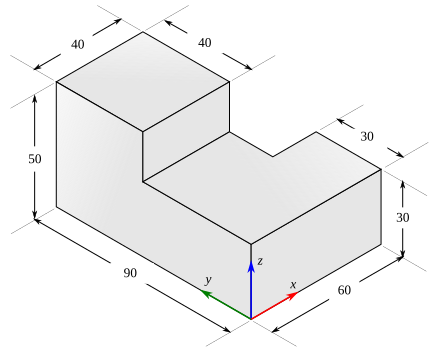
Fig. 108 .#
Obtenga el modelo dinámico del manipulador PP mostrado en la Figura Fig. 109. Considere que las masas de los eslabones son \(m_1\) y \(m_2\). El \(CM_1\) está ubicado a una distancia \(l_{c_1}\) del origen de \(\{1\}\), y el \(CM_2\) coincide con el origen de \(\{2\}\).
{kind=link}
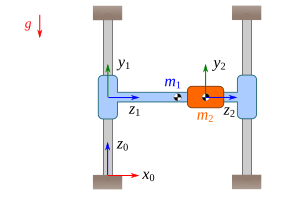
Fig. 109 .#
Obtenga el modelo dinámico del manipulador PP mostrado en la Figura Fig. 110. Considere que las masas de los eslabones son \(m_1\) y \(m_2\). El \(CM_1\) está ubicado a una distancia \(l_{c_1}\) del origen de \(\{1\}\), tal como se esquematiza, y el \(CM_2\) coincide con el origen de \(\{2\}\).
{kind=link}
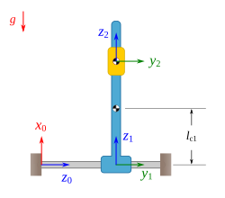
Fig. 110 .#
Obtenga el modelo dinámico del manipulador RP mostrado en la Figura Fig. 111. Las masas de los eslabones son \(m_1\) y \(m_2\). Los tensores de inercia expresados en un sistema ubicado en el centro de masa de cada eslabón están dados por:
{kind=link}
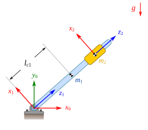
Fig. 111 .#
Obtenga el modelo dinámico del manipulador PR mostrado en la Figura. Las masas de los eslabones son \(m_1\) y \(m_2\). Considere que el CDM del eslabón 1 coincide con el origen de coordenadas del sistema \(\{1\}\). La longitud total del eslabón 2 es \(l_2\). Los tensores de inercia expresados en un sistema ubicado en el centro de masa de cada eslabón están dados por:
{kind=link}
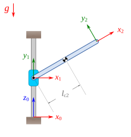
Fig. 112 .#
Obtenga el modelo dinámico del manipulador RP mostrado en la figura. Las masas de los eslabones son \(m_1\) y \(m_2\). Considere que los tensores de inercia \(I_i\) están dados por:
{kind=link}
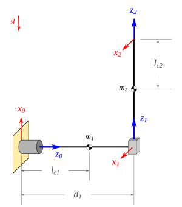
Fig. 113 .#
Obtenga el modelo dinámico del manipulador RR mostrado en la figura. Las masas de los eslabones son \(m_1\) y \(m_2\). Considera que los tensores de inercia \(\Icm{i}\) son matrices diagonales.
{kind=link}
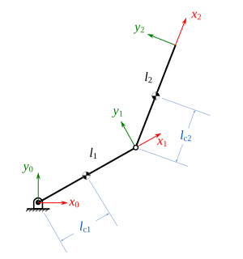
Fig. 114 .#